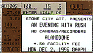
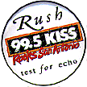

|
December 2, 1996 The Alamodome. San Antonio, TX
  The San Antonio Express-News December 4, 1996
RUSH DELIVERS PRECISELY WHAT FANS WANT Like actor Richard Dreyfus' irresistable urge for contact in "Close Encounters of the Third Kind," nearly 11,000 loyal Rush fans packed into the Alamodome Monday night for reaffirmation with Geddy Lee, Alex Lifeson, and Neil Peart. Why? Because after 22 years together, the members of Rush (like Ol' Blue Eyes) still do it their way, if sometimes a bit heavy-handedly. Gone are the spectacular, thunderous, unpredictable bomb effects of old that would more than occasionally punctuate the live sound and thrill the red-eyed masses. In their place was the perfection of follow spots, lasers and digital MTV-style video. "The Trees" was accompanied by cursory video visions of magnificent maples, while the smooth pop of "Half The World," from the new "Test For Echo" album, offered inane images of the band and a signpost reading "the half." Live footage worked best, allowing those without binoculars to see Lifeson, Peart and Lee get down and rock. Lee's high, nasal vocal still cuts distinctively through the three-piece bombast. The singer roamed the stage freely with his Fender Jazz bass, often joking with Lifeson, who lorded over a barrage of guitar pedals. Peart's drums sounded like cannon fire. The numerous high-pitched tom-toms were mercilessly whacked in inimitible trademark fashion by the gifted drummer, so fond of odd time signatures. The new instrumental "Limbo" was loud and percussive. Sampled voices, seemingly out of nowhere, eerily drifted from suspended speakers in the middle of the Alamodome for a surprise effect. Technology has taken more of a toll on Rush than age. Lifeson's mastery of chorus effects tends to mush-up his driving chord attack. Lee's abandonment of his clackity Rickenbacker 4001 bass maybe makes sonic sense but lacks character. Straight-ahead arrangements worked best. "Closer to the Heart" was instantly recognizable, but it was on "2112" that the old lion roared fiercely, in large part because Lifeson decided to play loud and rough. After a brief intermission, Rush returned with the popular meta-physical paen "Free Will," followed by "Roll the Bones," featuring some inventive video accompaniment. The concert was a giant lovefest. Lee and company deliver the goods like consummate pros, trading the old rawness for modern precision. Hey, it's the '90s.
|